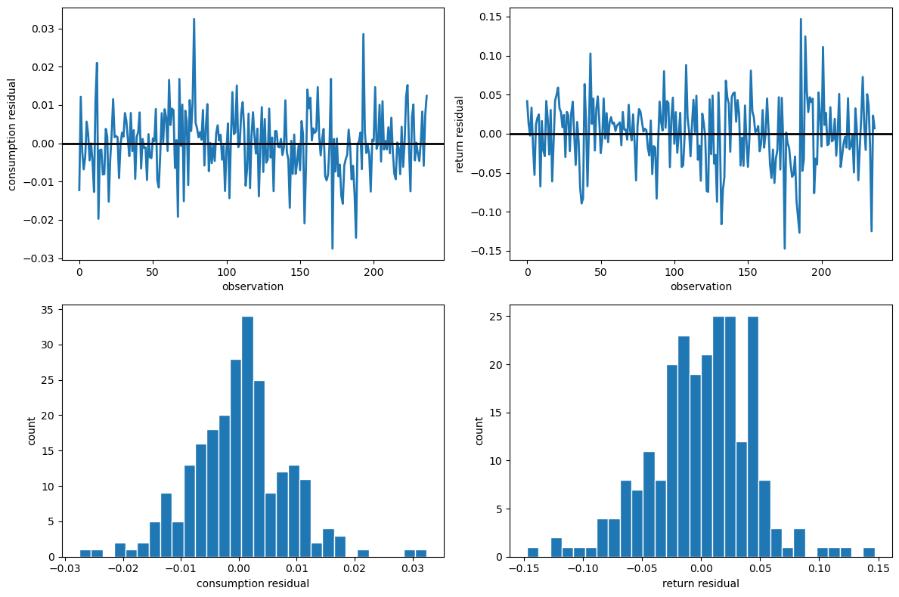

93. Stochastic Consumption, Risk Aversion, and the Temporal Behavior of Asset Returns#
Evans and Honkapohja: What were the profession’s most important responses to the Lucas Critique?
Sargent: There were two. The first and most optimistic response was complete rational expectations econometrics. A rational expectations equilibrium is a likelihood function. Maximize it.
— An Interview with Thomas J. Sargent [Evans and Honkapohja, 2005]
93.1. Overview#
This lecture describes how Hansen and Singleton [1983] formulated a complete statistical model of asset returns and consumption growth, then estimated its parameters by the method of maximum likelihood.
They detect a defects in their model, one of which Mehra and Prescott [1985] later called the equity premium puzzle.
Hansen and Singleton [1983] study a consumption-based asset pricing model in which a representative consumer with CRRA preferences chooses how to allocate wealth across traded assets.
First-order conditions for asset holdings are stochastic Euler equations that connect consumption growth, asset returns, and preference parameters.
Hansen and Singleton [1983] assume that consumption growth and asset returns are jointly lognormal.
Then Euler equations imply a set of restrictions on a the joint distribution of asset prices and returns.
These restrict a linear time-series model for logarithms of consumption growth and returns in which predictable movements in log returns are proportional to predictable movements in log consumption growth.
Hansen and Singleton estimated their model by Maximum Likelihood Estimation.
The empirical findings of Hansen and Singleton [1983] constitute what Mehra and Prescott [1985] would later call the equity premium puzzle.
To keep lecture this lecture narrowly focused, we estimate one return at a time (either a market proxy or a T-bill) rather than the full multi-asset systems studied by Hansen and Singleton [1983].
we use only monthly nondurable consumption (
ND).
In addition to what comes with Anaconda, this lecture requires pandas-datareader
!pip install pandas-datareader
import warnings
from itertools import combinations
import matplotlib.pyplot as plt
import numpy as np
import pandas as pd
from IPython.display import Latex
from pandas_datareader import data as web
from scipy import stats
from scipy.linalg import LinAlgError, cholesky, solve_triangular
from scipy.optimize import minimize
from statsmodels.stats.stattools import durbin_watson
warnings.filterwarnings(
"ignore", message=".*date_parser.*", category=FutureWarning
)
We also define a helper to display DataFrames as LaTeX arrays in the hidden cell below
93.2. Euler equation#
Consider a single-good economy of identical consumers whose utility functions are in the CRRA form
where \(c_t\) is aggregate real per capita consumption and \(U(\cdot)\) is the period utility function.
The representative consumer chooses a stochastic consumption plan to maximize the expected value of a time-additive utility function,
Consumers substitute present for future consumption by trading the ownership rights of \(N\) financial and capital assets.
Let \(\mathbf{w}_t\) denote the holdings of the \(N\) assets at date \(t\), \(\mathbf{q}_t\) the vector of asset prices, \(\mathbf{d}_t\) the vector of dividends, and \(y_t\) real labor income.
A feasible consumption and investment plan \(\{c_t, \mathbf{w}_t\}\) must satisfy the sequence of budget constraints
where \((\mathbf{q}_t + \mathbf{d}_t) \cdot \mathbf{w}_t\) is the cum-dividend value of the portfolio carried into period \(t\).
To derive the first-order conditions, attach a Lagrange multiplier \(\lambda_t\) to the budget constraint (93.3) at each date \(t\) and form the Lagrangian
Differentiating \(\mathcal{L}\) with respect to \(c_t\) gives
Differentiating with respect to \(w_{i,t+1}\), the holdings of asset \(i\) carried from date \(t\) into date \(t+1\), collects two terms: \(w_{i,t+1}\) appears in the date-\(t\) budget constraint as well as in the date-\((t+1)\) constraint:
By the law of iterated expectations, this becomes
Hence,
Substituting \(\lambda_t = U'(c_t)\) and \(\lambda_{t+1} = U'(c_{t+1})\) yields
Dividing both sides by \(q_{it}\) and defining the gross return \(r_{it+1} := (q_{i,t+1} + d_{i,t+1})/q_{it}\) yields the stochastic Euler equation:
where \(r_{it+1}\) is the gross real return on asset \(i\).
Substituting the CRRA marginal utility \(U'(c_t) = c_t^{\gamma-1} = c_t^{\alpha}\) with \(\alpha := \gamma - 1\) into (93.5) and rearranging gives
The coefficient of relative risk aversion is \(-\alpha\).
93.3. The Euler equation under lognormality#
Using the Euler equation (93.6) derived above, we now impose the distributional assumptions of Hansen and Singleton [1983].
Let \(x_t = c_t / c_{t-1}\) denote the consumption ratio, and define \(u_{it} = x_t^\alpha r_{it}\) where \(r_{it}\) is the gross real return on asset \(i\).
The Euler equation (93.6) states \(E_{t-1}[u_{it}] = 1/\beta\).
Define log variables \(X_t = \log x_t\), \(R_{it} = \log r_{it}\), and \(U_{it} = \log u_{it}\), so that
Assume the vector process \(\{Y_t\} = \{(X_t, R_{1t}, \ldots, R_{nt})^\top\}\) is jointly stationary and Gaussian.
Under this assumption, \(U_{it}\) conditional on the information set \(\psi_{t-1}\) is normal with constant variance \(\sigma_i^2\) and a conditional mean \(\mu_{i,t-1}\) that is a linear function of past \(Y\)’s.
Because \(u_{it} = \exp(U_{it})\) is conditionally lognormal,
Setting \(E_{t-1}[u_{it}] = 1/\beta\) and taking logs gives \(\mu_{i,t-1} + \sigma_i^2/2 = -\log\beta\).
Now define the innovation
Then \(E_{t-1}[V_{i,t}]=0\), where \(\sigma_i^2=\operatorname{Var}_{t-1}(\alpha X_t + R_{it})\) is constant under the stationarity and Gaussian assumptions.
Setting \(E_{t-1}[V_{i,t}] = 0\) gives the conditional mean restriction
Equation (93.10) is the central result of Hansen and Singleton [1983].
The predictable component of each asset’s log return is proportional to the predictable component of log consumption growth, with proportionality factor \(-\alpha\).
The intercept absorbs the discount factor \(\beta\) and the lognormal variance term \(\sigma_i^2 / 2\).
Let’s consider three special cases to better understand the implications of (93.10):
Risk neutrality (\(\alpha = 0\)): Each asset’s log return equals a constant plus a serially uncorrelated error, so returns are serially uncorrelated.
Log utility (\(\alpha = -1\)): The difference \(R_{it} - X_t\) has no time-varying predictable component, so returns and consumption growth share the same predictable component.
Risk aversion (\(\alpha < 0\)): The time-varying part of \(E_{t-1}[R_{it}]\) equals \(-\alpha\) times \(E_{t-1}[X_t]\), so a larger \(|\alpha|\) amplifies the sensitivity of expected returns to expected consumption growth.
For a given consumption–return covariance structure, higher relative risk aversion (\(-\alpha\)) widens the gap between risky-asset returns and the risk-free return.
The equity premium puzzle arises because the observed spread is large but estimated \(|\alpha|\) is small as we will see soon in our estimation.
93.4. The restricted system and its likelihood#
To build a likelihood, we need to parameterize the conditional expectation \(E_{t-1}[X_t]\).
In the single-return case, write \(\mathbf{Y}_t = (X_t, R_t)^\top\) and assume that the predictable component of \(X_t\) is a finite-order linear function of past observations:
where \(\mathbf{a}(L)\) is a vector of lag polynomial coefficients in past \((X, R)\) and \(\mu_x\) is a constant.
The consumption-growth equation is unrestricted, so \(X_t\) depends freely on its own lags and on lagged returns.
The return equation, however, is restricted by the Euler equation.
Combining (93.10) with (93.11) forces the predictable part of \(R_t\) to be \(-\alpha\) times the predictable part of \(X_t\), plus a constant.
This gives the restricted system
with
where \(\sigma_U^2 := \operatorname{Var}_{t-1}(\alpha X_t + R_t) = \alpha^2 \sigma_{XX} + \sigma_{RR} + 2\alpha \sigma_{XR}\) under conditional homoskedasticity.
The sign in the second element of \(\boldsymbol{\mu}\) follows directly from (93.10).
The innovations \(\mathbf{V}_t\) are assumed to be Gaussian with density \(f_V(\mathbf{v})\).
Since \(\mathbf{V}_t = \mathbf{A}_0 \mathbf{Y}_t - \mathbf{A}_1(L)\mathbf{Y}_{t-1} - \boldsymbol{\mu}\), the observables \(\mathbf{Y}_t\) are a linear transformation of \(\mathbf{V}_t\) with \(\mathbf{Y}_t = \mathbf{A}_0^{-1}(\mathbf{V}_t + \mathbf{A}_1(L)\mathbf{Y}_{t-1} + \boldsymbol{\mu})\).
The change-of-variables formula for densities gives
Because \(\mathbf{A}_0\) is unit lower triangular, \(\det(\mathbf{A}_0) = 1\), so the Jacobian term disappears and the log-likelihood of \(\mathbf{Y}_t\) equals the log-likelihood of \(\mathbf{V}_t\) evaluated at the residuals.
Since the Jacobian is unity, the conditional density of \(\mathbf{Y}_t\) is the Gaussian density of \(\mathbf{V}_t\) evaluated at \(\mathbf{v}_t = \mathbf{A}_0 \mathbf{Y}_t - \mathbf{A}_1(L)\mathbf{Y}_{t-1} - \boldsymbol{\mu}\).
For a single observation, \(\mathbf{V}_t \sim N(\mathbf{0}, \boldsymbol{\Sigma})\) has density
Taking logarithms gives
Summing over \(T\) observations and dropping the constant \(-T\log(2\pi)\) yields the log-likelihood function
where \(\boldsymbol{\Sigma}\) is the covariance matrix of the innovation \(\mathbf{V}_t\) and \(\theta\) collects all free parameters including \(\alpha\), \(\beta\), the covariance parameters, the first-row intercept \(\mu_x\), and the first-row lag coefficients.
The restrictions imposed by (93.6) enter (93.14) through the structure of \(\mathbf{A}_0\), \(\mathbf{A}_1(L)\), and \(\boldsymbol{\mu}\) in (93.13).
The second row of (93.12) has no free lag coefficients and its intercept is determined by \(\alpha\), \(\beta\), and \(\boldsymbol{\Sigma}\).
An alternative unrestricted bivariate VAR(\(p\)) would estimate both rows of (93.12) freely.
Each row has 1 intercept plus \(2p\) lag coefficients (\(p\) lags \(\times\) 2 variables), giving \(2(1 + 2p)\) mean parameters.
Adding 3 free covariance parameters (\(\sigma_{XX}, \sigma_{RR}, \sigma_{XR}\)) gives a total of \(5 + 4p\).
The restricted system (93.12) has only \(6 + 2p\) free parameters: the first row contributes \(1 + 2p\) (its intercept \(\mu_x\) and \(2p\) lag coefficients), plus \(\alpha\), \(\beta\), and the 3 covariance parameters.
The second row adds nothing because its lag structure and intercept are pinned down by \(\alpha\), \(\beta\), and \(\boldsymbol{\Sigma}\) via (93.10).
The difference \((\smash{5 + 4p}) - (\smash{6 + 2p}) = 2p - 1\) gives the degrees of freedom for the likelihood ratio tests we will perform soon.
93.5. Likelihood implementation#
Now let’s implement the likelihood (93.14).
The building blocks are:
a function to construct lagged data matrices \((\mathbf{Y}_t, \mathbf{Y}_{t-1}, \ldots, \mathbf{Y}_{t-p})\),
a function to map the parameter vector into the matrices \(\mathbf{A}_0\), \(\mathbf{A}_1\), \(\boldsymbol{\mu}\), \(\boldsymbol{\Sigma}\),
a function to compute the restricted-system residuals \(\mathbf{V}_t = \mathbf{A}_0 \mathbf{Y}_t - \mathbf{A}_1(L) \mathbf{Y}_{t-1} - \boldsymbol{\mu}\), and
the Gaussian log-likelihood itself.
Since we are working with log-transformed data, we define a helper for the transformation below
def to_mle_array(data):
valid = (data[:, 0] > 0.0) & (data[:, 1] > 0.0)
return np.column_stack(
[np.log(data[valid, 1]), np.log(data[valid, 0])])
First we build the lagged data matrices, which are the inputs to the likelihood function
def build_lagged_data(data, n_lags):
"""
Build Y_t and lag stacks [Y_{t-1}, ..., Y_{t-p}] for bivariate data.
"""
if data.ndim != 2 or data.shape[1] != 2:
raise ValueError("data must be T x 2.")
if data.shape[0] <= n_lags:
raise ValueError("Sample size must exceed n_lags.")
t_obs = data.shape[0]
n_obs = t_obs - n_lags
y_t = data[n_lags:, :]
y_lag = np.empty((n_obs, 2 * n_lags))
for lag in range(1, n_lags + 1):
y_lag[:, 2 * (lag - 1) : 2 * lag] = data[n_lags - lag : t_obs - lag, :]
return y_t, y_lag
Next, we validate and unpack the parameter vector while enforcing feasibility conditions
def unpack_parameters(params, n_lags):
"""
Validate and unpack parameter vector.
"""
if len(params) != 6 + 2 * n_lags:
return None
α, β, σ_x, σ_r, cov_xr, μ_x = params[:6]
a_lags = params[6:]
tol = 1e-8
if not np.isfinite(α):
return None
if not (tol < β):
return None
if not (σ_x > tol and σ_r > tol):
return None
Σ = np.array(
[
[σ_x ** 2, cov_xr],
[cov_xr, σ_r ** 2],
]
)
try:
cholesky(Σ, lower=True)
except (LinAlgError, ValueError):
return None
return {
"α": np.array(α),
"β": np.array(β),
"σ_x": np.array(σ_x),
"σ_r": np.array(σ_r),
"cov_xr": np.array(cov_xr),
"μ_x": np.array(μ_x),
"a_lags": a_lags,
}
The next step maps parameters and lagged data into restricted-system residuals
def restricted_residuals(
params,
y_t,
y_lag,
n_lags,
):
"""
Compute V_t implied by A0 Y_t - A1 Y_{t-1} - mu.
"""
parsed = unpack_parameters(params, n_lags)
if parsed is None:
return None
α = float(parsed["α"])
β = float(parsed["β"])
σ_x = float(parsed["σ_x"])
σ_r = float(parsed["σ_r"])
cov_xr = float(parsed["cov_xr"])
μ_x = float(parsed["μ_x"])
a_lags = np.asarray(parsed["a_lags"])
A0 = np.array([[1.0, 0.0], [α, 1.0]])
A1 = np.zeros((2, 2 * n_lags))
A1[0, :] = a_lags
σ_u2 = α ** 2 * σ_x ** 2 + σ_r ** 2 + 2.0 * α * cov_xr
μ = np.array([μ_x, -np.log(β) - 0.5 * σ_u2])
resid = y_t @ A0.T - y_lag @ A1.T - μ[None, :]
if np.any(np.abs(resid) > 1e10):
return None
return resid
The recursive structure also lets us simulate data from the model.
We can generate data from the model by drawing innovations \(\mathbf{V}_t \sim N(\mathbf{0}, \boldsymbol{\Sigma})\) and compute \(\mathbf{Y}_t = \mathbf{A}_0^{-1}(\mathbf{A}_1(L) \mathbf{Y}_{t-1} + \boldsymbol{\mu} + \mathbf{V}_t)\) forward in time.
This is useful for checking the likelihood implementation through Monte Carlo
def simulate_restricted_var(
params,
n_obs,
n_lags,
burn_in=200,
seed=0,
):
"""
Simulate [log consumption growth, log return] from the restricted model.
"""
if seed is not None:
np.random.seed(seed)
if len(params) != 6 + 2 * n_lags:
raise ValueError("Parameter vector length must be 6 + 2 * n_lags.")
α, β, σ_x, σ_r, cov_xr, μ_x = params[:6]
a_lags = params[6:]
Σ_e = np.array(
[
[σ_x ** 2, cov_xr],
[cov_xr, σ_r ** 2],
]
)
A0 = np.array([[1.0, 0.0], [α, 1.0]])
Σ_v = A0 @ Σ_e @ A0.T
eigvals = np.linalg.eigvals(Σ_v)
if np.min(eigvals) <= 0.0:
Σ_v += np.eye(2) * 1e-6
A1 = np.zeros((2, 2 * n_lags))
A1[0, :] = a_lags
σ_u2 = α ** 2 * σ_x ** 2 + σ_r ** 2 + 2.0 * α * cov_xr
μ = np.array([μ_x, -np.log(β) - 0.5 * σ_u2])
total_n = n_obs + burn_in
y = np.zeros((total_n, 2))
for t in range(n_lags, total_n):
lag_stack = []
for lag in range(1, n_lags + 1):
lag_stack.append(y[t - lag, :])
lag_vec = np.concatenate(lag_stack)
shock = np.random.multivariate_normal(np.zeros(2), Σ_v)
y[t, :] = np.linalg.solve(A0, A1 @ lag_vec + μ + shock)
return y[burn_in:, :]
Next, we encode the Gaussian log-likelihood implied by the residual covariance matrix
def log_likelihood_mle(
params,
y_t,
y_lag,
n_lags,
include_const=True,
):
"""
Evaluate Gaussian log-likelihood for the restricted system.
"""
parsed = unpack_parameters(params, n_lags)
if parsed is None:
return -np.inf
resid = restricted_residuals(params, y_t, y_lag, n_lags)
if resid is None:
return -np.inf
α = float(parsed["α"])
σ_x = float(parsed["σ_x"])
σ_r = float(parsed["σ_r"])
cov_xr = float(parsed["cov_xr"])
Σ_e = np.array(
[
[σ_x ** 2, cov_xr],
[cov_xr, σ_r ** 2],
]
)
A0 = np.array([[1.0, 0.0], [α, 1.0]])
Σ_v = A0 @ Σ_e @ A0.T
try:
chol = cholesky(Σ_v, lower=True)
log_det = 2.0 * np.sum(np.log(np.diag(chol) + 1e-16))
std_resid = solve_triangular(chol, resid.T, lower=True).T
quad_form = np.sum(std_resid ** 2)
except (LinAlgError, ValueError):
return -np.inf
sample_size = y_t.shape[0]
ll = -0.5 * sample_size * log_det - 0.5 * quad_form
if include_const:
ll -= sample_size * np.log(2.0 * np.pi)
if np.isnan(ll) or np.isinf(ll):
return -np.inf
return float(ll)
To pass this into a numerical optimizer, we wrap the log-likelihood as a minimization objective
def negative_log_likelihood(
params,
y_t,
y_lag,
n_lags,
):
"""
Return negative log-likelihood for minimization.
"""
ll = log_likelihood_mle(params, y_t, y_lag, n_lags, include_const=False)
if np.isfinite(ll):
return -ll
return 1e20
We set parameter bounds and generate data-driven starting values for multi-start optimization.
We keep \(\beta\) positive but do not force \(\beta < 1\) in estimation
def parameter_bounds(n_lags):
"""
Bounds for optimization.
"""
bounds = [
(-200.0, 200.0), # α (= -risk aversion)
(1e-8, 2.0), # β (discount factor)
(1e-8, None), # σ_x (std dev of consumption innovation)
(1e-8, None), # σ_r (std dev of return innovation)
(None, None), # cov_xr (covariance)
(None, None), # μ_x (consumption growth intercept)
]
bounds += [(-0.99, 0.99)] * (2 * n_lags) # VAR lag coefficients
return bounds
We use multiple starting vectors to help local solvers escape poor initializations
def starting_values(y_t, y_lag, n_lags, n_starts=10):
"""
Generate multiple starting values.
"""
rng = np.random.default_rng(123)
starts = []
n_params = 6 + 2 * n_lags
base = np.zeros(n_params)
base[0] = -0.5
base[1] = 0.999
base[2] = max(float(np.std(y_t[:, 0])), 1e-3)
base[3] = max(float(np.std(y_t[:, 1])), 1e-3)
base[4] = float(np.cov(y_t.T)[0, 1])
base[5] = float(np.mean(y_t[:, 0]))
base[6:] = 0.1
starts.append(base.copy())
# OLS seed from unrestricted VAR
n_obs = y_t.shape[0]
x = np.column_stack([np.ones(n_obs), y_lag])
coef = np.linalg.lstsq(x, y_t, rcond=None)[0]
resid = y_t - x @ coef
Σ_e = resid.T @ resid / max(1, n_obs)
a_lags_ols = coef[1:, 0]
r_lags_ols = coef[1:, 1]
denom = float(a_lags_ols @ a_lags_ols)
if denom > 1e-10:
α_ols = -float((a_lags_ols @ r_lags_ols) / denom)
else:
α_ols = -0.5
μ_x_ols = float(coef[0, 0])
μ_r_ols = float(coef[0, 1])
σ_x_ols = float(np.sqrt(max(Σ_e[0, 0], 1e-8)))
σ_r_ols = float(np.sqrt(max(Σ_e[1, 1], 1e-8)))
cov_xr_ols = float(Σ_e[0, 1])
σ_u2_ols = (
α_ols ** 2 * σ_x_ols ** 2
+ σ_r_ols ** 2
+ 2.0 * α_ols * cov_xr_ols
)
β_ols = float(np.exp(-(μ_r_ols + α_ols * μ_x_ols + 0.5 * σ_u2_ols)))
β_ols = float(np.clip(β_ols, 1e-6, 2.0))
ols_seed = np.zeros(n_params)
ols_seed[0] = α_ols
ols_seed[1] = β_ols
ols_seed[2] = σ_x_ols
ols_seed[3] = σ_r_ols
ols_seed[4] = cov_xr_ols
ols_seed[5] = μ_x_ols
ols_seed[6:] = a_lags_ols
starts.append(ols_seed.copy())
seeds = [base, ols_seed]
while len(starts) < n_starts:
seed = seeds[len(starts) % len(seeds)]
trial = seed.copy()
trial[:2] += rng.normal(0.0, 0.2, 2)
trial[2:6] *= 1.0 + rng.normal(0.0, 0.15, 4)
trial[6:] += rng.normal(0.0, 0.08, 2 * n_lags)
trial[1] = max(trial[1], 1e-6)
trial[2] = max(trial[2], 1e-6)
trial[3] = max(trial[3], 1e-6)
starts.append(trial)
return starts
Standard errors come from an outer-product-of-gradients (OPG) approximation to the information matrix, computed by finite differences of per-observation log-likelihood contributions.
This tends to be more numerically stable than finite-difference Hessians in this application.
def log_likelihood_contributions(
params,
y_t,
y_lag,
n_lags,
include_const=False,
):
"""
Vector of per-observation Gaussian log-likelihood contributions.
Returns an array of length T, or None if the parameter vector is infeasible.
"""
parsed = unpack_parameters(params, n_lags)
if parsed is None:
return None
resid = restricted_residuals(params, y_t, y_lag, n_lags)
if resid is None:
return None
α = float(parsed["α"])
σ_x = float(parsed["σ_x"])
σ_r = float(parsed["σ_r"])
cov_xr = float(parsed["cov_xr"])
Σ_e = np.array(
[
[σ_x ** 2, cov_xr],
[cov_xr, σ_r ** 2],
]
)
A0 = np.array([[1.0, 0.0], [α, 1.0]])
Σ_v = A0 @ Σ_e @ A0.T
try:
chol = cholesky(Σ_v, lower=True)
log_det = 2.0 * np.sum(np.log(np.diag(chol) + 1e-16))
std_resid = solve_triangular(chol, resid.T, lower=True).T
except (LinAlgError, ValueError):
return None
quad = np.sum(std_resid ** 2, axis=1)
ll_t = -0.5 * log_det - 0.5 * quad
if include_const:
ll_t -= np.log(2.0 * np.pi)
if not np.all(np.isfinite(ll_t)):
return None
return ll_t
def opg_standard_errors(
params,
y_t,
y_lag,
n_lags,
step=1e-6,
max_step_shrink=12,
eig_floor=1e-12,
):
"""
Standard errors via OPG approximation to the information matrix.
"""
n = len(params)
ll0 = log_likelihood_contributions(params, y_t, y_lag, n_lags, include_const=False)
if ll0 is None:
return np.full(n, np.nan)
n_obs = int(ll0.shape[0])
scores = np.empty((n_obs, n))
for i in range(n):
base_step = step * (abs(params[i]) + 1.0)
hi = base_step
ll_plus = None
ll_minus = None
for _ in range(max_step_shrink + 1):
p_plus = params.copy()
p_minus = params.copy()
p_plus[i] += hi
p_minus[i] -= hi
ll_plus = log_likelihood_contributions(
p_plus, y_t, y_lag, n_lags, include_const=False
)
ll_minus = log_likelihood_contributions(
p_minus, y_t, y_lag, n_lags, include_const=False
)
if ll_plus is not None and ll_minus is not None:
break
hi *= 0.5
if ll_plus is None or ll_minus is None:
return np.full(n, np.nan)
scores[:, i] = (ll_plus - ll_minus) / (2.0 * hi)
if not np.all(np.isfinite(scores)):
return np.full(n, np.nan)
# Center scores to mitigate numerical drift away
scores = scores - scores.mean(axis=0, keepdims=True)
opg = scores.T @ scores
if not np.all(np.isfinite(opg)):
return np.full(n, np.nan)
opg = 0.5 * (opg + opg.T)
try:
eigvals, eigvecs = np.linalg.eigh(opg)
except (LinAlgError, ValueError):
return np.full(n, np.nan)
floor = float(eig_floor) * max(1.0, float(np.max(eigvals)))
eigvals = np.clip(eigvals, floor, None)
cov = eigvecs @ np.diag(1.0 / eigvals) @ eigvecs.T
se = np.sqrt(np.maximum(np.diag(cov), 0.0))
se[~np.isfinite(se)] = np.nan
return se
The multi-start MLE estimator below combines these pieces and returns parameters, fit criteria, and residuals
def estimate_mle(data, n_lags, verbose=False):
"""
Estimate the restricted model by multi-start local optimization.
"""
y_t, y_lag = build_lagged_data(data, n_lags)
bounds = parameter_bounds(n_lags)
starts = starting_values(y_t, y_lag, n_lags)
best_result = None
best_ll = -np.inf
for i, x0 in enumerate(starts):
try:
result = minimize(
negative_log_likelihood,
x0=x0,
args=(y_t, y_lag, n_lags),
method="L-BFGS-B",
bounds=bounds,
)
except Exception:
continue
if np.isfinite(result.fun):
ll_val = log_likelihood_mle(result.x, y_t, y_lag, n_lags)
if np.isfinite(ll_val) and ll_val > best_ll:
best_ll = ll_val
best_result = result
if verbose:
print(
f"start={i}, success={result.success}, "
f"status={result.status}, loglike={ll_val:.2f}"
)
n_params = 6 + 2 * n_lags
if best_result is None:
return {
"params": np.full(n_params, np.nan),
"se": np.full(n_params, np.nan),
"loglike": -np.inf,
"converged": False,
"optimizer_success": False,
"residuals": None,
"n_obs": int(y_t.shape[0]),
}
params = best_result.x
se = opg_standard_errors(params, y_t, y_lag, n_lags)
resid = restricted_residuals(params, y_t, y_lag, n_lags)
ll_val = log_likelihood_mle(params, y_t, y_lag, n_lags)
return {
"params": params,
"se": se,
"loglike": ll_val,
"converged": bool(np.isfinite(ll_val)),
"optimizer_success": bool(best_result.success),
"residuals": resid,
"n_obs": int(y_t.shape[0]),
}
Residual diagnostics below summarize normality and serial-correlation checks
def residual_diagnostics(resid):
"""
Compute basic residual diagnostics.
"""
out = {}
for i, label in enumerate(["consumption", "return"]):
jb_stat, jb_pval = stats.jarque_bera(resid[:, i])
out[f"{label}_jb_stat"] = float(jb_stat)
out[f"{label}_jb_pval"] = float(jb_pval)
out[f"{label}_dw"] = float(durbin_watson(resid[:, i]))
return out
Finally, a lag-loop wrapper runs MLE across different lag lengths and collects results in a DataFrame
def run_mle_by_lag(
data,
lags=(2, 4, 6),
verbose=False,
):
"""
Estimate restricted MLE models by lag length.
"""
rows = []
fits = {}
for lag in lags:
fit = estimate_mle(data, n_lags=lag, verbose=verbose)
fits[lag] = fit
rows.append(
{
"NLAG": lag,
"α_hat": fit["params"][0],
"se_α": fit["se"][0],
"β_hat": fit["params"][1],
"se_β": fit["se"][1],
"loglike": fit["loglike"],
"n_obs": fit["n_obs"],
}
)
table = pd.DataFrame(rows).set_index("NLAG")
return table, fits
93.5.1. Simulation#
Before applying the likelihood to real data, we verify that it recovers known parameters from simulated data generated by the restricted system.
For n_lags = 1, the parameter vector is
where the last two entries are the coefficients on \(X_{t-1}\) and \(R_{t-1}\) in the first-row regression for \(X_t\).
More generally, for n_lags = p we pack a_lags in the order
\([a_{x,1}, a_{r,1}, \ldots, a_{x,p}, a_{r,p}]\), so the full parameter vector has length \(6 + 2p\).
The covariance parameters \((\sigma_x, \sigma_r, \sigma_{xr})\) describe the reduced-form shocks to \((X_t, R_t)\): if \(\boldsymbol{\varepsilon}_t = (\varepsilon_{x,t}, \varepsilon_{r,t})^\top \sim N(0, \boldsymbol{\Sigma}_\varepsilon)\), then \(\boldsymbol{\Sigma}_\varepsilon = \begin{bmatrix}\sigma_x^2 & \sigma_{xr}\\ \sigma_{xr} & \sigma_r^2\end{bmatrix}\).
The restricted-system innovation is \(\mathbf{V}_t = \mathbf{A}_0 \boldsymbol{\varepsilon}_t\), so its covariance is \(\boldsymbol{\Sigma}_V = \mathbf{A}_0 \boldsymbol{\Sigma}_\varepsilon \mathbf{A}_0^\top\), which is what enters the likelihood.
In the simulation recursion we draw \(\mathbf{V}_t \sim N(0, \boldsymbol{\Sigma}_V)\) and compute \(\mathbf{Y}_t = \mathbf{A}_0^{-1}(\mathbf{A}_1(L)\mathbf{Y}_{t-1} + \boldsymbol{\mu} + \mathbf{V}_t)\) forward.
The following table compares the true parameters to the MLE estimates from a large simulated sample
α_true = -1.00
β_true = 0.993
σ_x_true = 0.015
σ_r_true = 0.020
cov_xr_true = 0.0001
μ_x_true = 0.002
a_x1_true = 0.40
a_r1_true = 0.10
true_params = np.array(
[
α_true,
β_true,
σ_x_true,
σ_r_true,
cov_xr_true,
μ_x_true,
a_x1_true,
a_r1_true,
]
)
sim_mle_data = simulate_restricted_var(
params=true_params,
n_obs=50000,
n_lags=1,
burn_in=5000,
seed=0,
)
fit_sim = estimate_mle(sim_mle_data, n_lags=1, verbose=False)
The point estimates are close to the true parameters, and the t-statistics for the null hypothesis that the true value is correct are small in magnitude, consistent with sampling variation.
93.6. Preference parameters and likelihood ratio tests#
The restricted system embeds preference parameters through cross-equation restrictions.
The parameter \(\alpha\) links predictable variation in returns to predictable variation in consumption growth.
Under the model, the return equation’s dependence on lagged variables is entirely determined by \(-\alpha\) times the consumption equation’s lag coefficients.
The parameter \(\beta\) shifts the return-equation intercept through \(-\log\beta - \sigma_U^2/2\).
Hansen and Singleton [1983] test these restrictions by comparing the restricted system to an unrestricted bivariate VAR estimated on the same sample.
If the restrictions imposed by the Euler-equation are correct, the restricted model should fit nearly as well as the unrestricted model.
The standard test is the likelihood ratio statistic
where \(\ell_u\) and \(\ell_r\) are the maximized log-likelihoods of the unrestricted and restricted models, and \(d\) is the difference in the number of free parameters.
Both likelihoods must be evaluated on the same effective sample for the LR distribution to be valid.
Hansen and Singleton [1983] report that for the value-weighted aggregate stock return, the \(\chi^2\) test statistics provide little evidence against the model.
In the tables below we report both chi2.cdf(LR, df) (corresponding to what HS report in parentheses) and the usual right-tail p(LR) = 1 - chi2.cdf
def likelihood_ratio_test(
fit_restricted,
fit_unrestricted,
df_diff,
):
"""
Compare nested specifications with an LR test.
"""
if not (fit_restricted["converged"] and fit_unrestricted["converged"]):
return {"lr_stat": np.nan, "p_value": np.nan, "chi2_cdf": np.nan}
if fit_restricted.get("n_obs") != fit_unrestricted.get("n_obs"):
return {"lr_stat": np.nan, "p_value": np.nan, "chi2_cdf": np.nan}
lr_stat = 2.0 * (fit_unrestricted["loglike"] - fit_restricted["loglike"])
chi2_cdf = stats.chi2.cdf(lr_stat, df=df_diff)
p_value = 1.0 - chi2_cdf
return {
"lr_stat": float(lr_stat),
"p_value": float(p_value),
"chi2_cdf": float(chi2_cdf),
}
The unrestricted benchmark is a Gaussian VAR for \(\mathbf{Y}_t = (X_t, R_t)^\top\) with free coefficients on all lags in both equations.
def estimate_unrestricted_var(data, n_lags):
"""
Estimate an unrestricted Gaussian VAR for Y_t = [X_t, R_t].
"""
y_t, y_lag = build_lagged_data(data, n_lags)
n_obs = y_t.shape[0]
x = np.column_stack([np.ones(n_obs), y_lag])
coef = np.linalg.lstsq(x, y_t, rcond=None)[0]
resid = y_t - x @ coef
Σ = resid.T @ resid / n_obs
try:
chol = cholesky(Σ, lower=True)
log_det = 2.0 * np.sum(np.log(np.diag(chol) + 1e-16))
std_resid = solve_triangular(chol, resid.T, lower=True).T
quad_form = np.sum(std_resid ** 2)
except (LinAlgError, ValueError):
return {
"coef": coef,
"Σ": np.full((2, 2), np.nan),
"residuals": resid,
"loglike": -np.inf,
"converged": False,
"n_obs": int(n_obs),
}
d = y_t.shape[1]
loglike = float(-0.5 * n_obs * d * np.log(2.0 * np.pi)
- 0.5 * n_obs * log_det - 0.5 * quad_form)
return {
"coef": coef,
"Σ": Σ,
"residuals": resid,
"loglike": loglike,
"converged": True,
"n_obs": int(n_obs),
}
def run_unrestricted_var_by_lag(data, lags=(2, 4, 6)):
"""
Estimate unrestricted VAR models by lag length.
"""
rows = []
fits = {}
for lag in lags:
fit = estimate_unrestricted_var(data, n_lags=lag)
fits[lag] = fit
rows.append(
{
"NLAG": lag,
"loglike": fit["loglike"],
"n_obs": fit["n_obs"],
}
)
table = pd.DataFrame(rows).set_index("NLAG")
return table, fits
The following function computes the LR statistic at each lag length, replicating the testing strategy of Table 1 in Hansen and Singleton [1983].
def restricted_vs_unrestricted_lr(mle_fits, unrestricted_fits, lags=(2, 4, 6)):
"""
Compute LR tests of restricted model versus unrestricted VAR.
"""
rows = []
for lag in lags:
fit_r = mle_fits[lag]
fit_u = unrestricted_fits[lag]
df_diff = (2 * (1 + 2 * lag) + 3) - (6 + 2 * lag)
lr = likelihood_ratio_test(fit_restricted=fit_r, fit_unrestricted=fit_u, df_diff=df_diff)
rows.append(
{
"NLAG": lag,
"lr_stat": lr["lr_stat"],
"p_value": lr["p_value"],
"chi2_cdf": lr["chi2_cdf"],
"df": df_diff,
"T": fit_r.get("n_obs", np.nan),
}
)
return pd.DataFrame(rows).set_index("NLAG")
93.7. Predictability and the R-squared restriction#
Section II of Hansen and Singleton [1983] emphasizes an implication of the restricted system for return predictability.
From (93.10) and (93.11), the predictable component of the log return is
Since the predictable return is a linear function of the predictable consumption growth, the variance of the predictable return component is exactly \(\alpha^2\) times the variance of the predictable consumption-growth component:
Hansen and Singleton [1983] derive the implied \(R^2\) of the return projection onto \(\psi_{t-1}\):
If \(\alpha = 0\) (risk neutrality), then \(R_R^2 = 0\) and asset returns are unpredictable.
If \(\alpha = -1\) (log utility), then \(R_t - X_t\) is unpredictable, so returns and consumption growth share the same predictable component.
More generally, the \(R_R^2\) for returns will be small whenever the variance of the unpredictable return component \(\operatorname{Var}(R_t \mid \psi_{t-1})\) is large relative to the predictable variance, which is the case for stock returns.
The function below reports:
restriction-side predictable-variance terms implied by the Euler equation, and
\(R_X^2\) and \(R_R^2\) from the unrestricted VAR.
def predictability_metrics(data, restricted_fit, unrestricted_fit, n_lags):
"""
Compute predictable-component metrics and unrestricted VAR R^2 values.
"""
y_t, y_lag = build_lagged_data(data, n_lags)
parsed = unpack_parameters(restricted_fit["params"], n_lags)
α = float(parsed["α"])
β = float(parsed["β"])
σ_x = float(parsed["σ_x"])
σ_r = float(parsed["σ_r"])
cov_xr = float(parsed["cov_xr"])
μ_x = float(parsed["μ_x"])
a_lags = np.asarray(parsed["a_lags"])
pred_x = y_lag @ a_lags + μ_x
σ_u2 = α ** 2 * σ_x ** 2 + σ_r ** 2 + 2.0 * α * cov_xr
pred_r = -α * pred_x - np.log(β) - 0.5 * σ_u2
x = y_t[:, 0]
r = y_t[:, 1]
resid_x = x - pred_x
resid_r = r - pred_r
r2_x = 1.0 - np.var(resid_x) / np.var(x)
r2_r = 1.0 - np.var(resid_r) / np.var(r)
if unrestricted_fit["converged"] and unrestricted_fit.get("coef") is not None:
n_obs = y_t.shape[0]
x_u = np.column_stack([np.ones(n_obs), y_lag])
pred_u = x_u @ unrestricted_fit["coef"]
resid_u = y_t - pred_u
var_x = np.var(y_t[:, 0])
var_r = np.var(y_t[:, 1])
r2_x_unres = np.nan if var_x <= 0.0 else 1.0 - np.var(resid_u[:, 0]) / var_x
r2_r_unres = np.nan if var_r <= 0.0 else 1.0 - np.var(resid_u[:, 1]) / var_r
else:
r2_x_unres = np.nan
r2_r_unres = np.nan
return {
"alpha_hat": α,
"var_pred_x": float(np.var(pred_x)),
"var_pred_r": float(np.var(pred_r)),
"alpha2_var_pred_x": float(α ** 2 * np.var(pred_x)),
"r2_x_restricted": float(r2_x),
"r2_r_restricted": float(r2_r),
"r2_x_unrestricted": float(r2_x_unres),
"r2_r_unrestricted": float(r2_r_unres),
"T": int(y_t.shape[0]),
}
93.8. Return-difference tests#
Hansen and Singleton [1983] also propose tests based on differences in log returns across assets.
From (93.10), the conditional mean of asset \(i\)’s log return is \(E_{t-1}[R_{it}] = -\alpha\, E_{t-1}[X_t] - \log\beta - \sigma_i^2/2\).
The term \(-\alpha\, E_{t-1}[X_t] - \log\beta\) is common to all assets, so it cancels in the difference:
which is a constant that does not depend on time-\((t-1)\) information.
Return differences should therefore be unpredictable if the model is correct, regardless of the values of \(\alpha\) and \(\beta\).
These tests avoid the need to measure consumption, at the cost of losing the ability to identify \(\alpha\) and \(\beta\).
Hansen and Singleton [1983] report that the return-difference restrictions are strongly rejected for models with multiple stock returns, providing substantial evidence against the CRRA-lognormal specification even when consumption measurement problems are eliminated.
The code below is an illustration of this logic on simulated data.
Reproducing the paper’s empirical return-difference tables requires estimating multi-asset systems that are outside this lecture’s scope
def simulate_multi_asset_nominal_returns(
n_obs,
n_assets=3,
α_true=-1.0,
β_true=0.993,
seed=0,
):
"""
Simulate log nominal returns satisfying E_t[beta * exp(alpha X) * r_i] = 1.
"""
if n_assets < 2:
raise ValueError("n_assets must be at least 2.")
rng = np.random.default_rng(seed)
x = np.empty(n_obs)
x[0] = 0.001
for t in range(1, n_obs):
x[t] = 0.001 + 0.4 * (x[t - 1] - 0.001) + 0.006 * rng.standard_normal()
sigmas = np.linspace(0.03, 0.06, n_assets)
eps = rng.standard_normal((n_obs, n_assets)) * sigmas
log_returns = -np.log(β_true) - α_true * x[:, None] + eps \
- 0.5 * sigmas[None, :] ** 2
return x, log_returns
def return_difference_test(log_returns, n_lags=2):
"""
Test predictability of pairwise log-return differences.
"""
if log_returns.ndim != 2 or log_returns.shape[1] < 2:
raise ValueError("log_returns must be T x m with m >= 2.")
if log_returns.shape[0] <= n_lags + 1:
raise ValueError("Sample size must exceed n_lags + 1.")
t_obs, n_assets = log_returns.shape
pairs = list(combinations(range(n_assets), 2))
n_obs = t_obs - n_lags - 1
z = np.empty((n_obs, 1 + n_assets * n_lags))
z[:, 0] = 1.0
for j in range(n_lags):
z[:, 1 + j * n_assets : 1 + (j + 1) * n_assets] = log_returns[
n_lags - j : t_obs - 1 - j, :
]
rows = []
for i, j in pairs:
y = log_returns[n_lags + 1 :, i] - log_returns[n_lags + 1 :, j]
coef = np.linalg.lstsq(z, y, rcond=None)[0]
resid = y - z @ coef
sigma2 = float((resid @ resid) / max(1, n_obs - z.shape[1]))
cov = sigma2 * np.linalg.pinv(z.T @ z)
slopes = coef[1:]
cov_slopes = cov[1:, 1:]
stat = float(slopes @ np.linalg.pinv(cov_slopes) @ slopes)
p_value = float(1.0 - stats.chi2.cdf(stat, df=slopes.shape[0]))
rows.append(
{
"pair": f"{i+1}-{j+1}",
"wald_chi2": stat,
"p_value": p_value,
"mean_spread": float(np.mean(y)),
}
)
return pd.DataFrame(rows).set_index("pair")
We run return_difference_test on simulated data with \(m = 3\) assets, giving \(\binom{3}{2} = 3\) pairs.
For each pair, the function regresses the return spread on a constant and n_lags lags of all asset returns, then tests whether the slope coefficients are jointly zero using a Wald \(\chi^2\) statistic
_, sim_log_returns = simulate_multi_asset_nominal_returns(
n_obs=1500,
n_assets=3,
α_true=-1.0,
β_true=0.993,
seed=0,
)
spread_test = return_difference_test(sim_log_returns, n_lags=2)
spread_pretty = spread_test.rename(columns={
"wald_chi2": r"\chi^2", "p_value": "p", "mean_spread": r"\overline{\Delta R}",
})
display_table(spread_pretty, fmt={
r"\chi^2": "{:.3f}",
"p": "{:.3f}",
r"\overline{\Delta R}": "{:.5f}",
})
Large \(p\)-values confirm that return differences are unpredictable in this simulation, exactly as the model predicts when \(\alpha = -1\).
93.9. Empirical MLE estimation#
We now apply the maximum likelihood estimator of Hansen and Singleton [1983] to real data.
93.9.1. Data#
Both this lecture and the companion lecture Estimating Euler Equations by Generalized Method of Moments use the same data construction.
Hansen and Singleton [1982] and Hansen and Singleton [1983] use monthly data on real per capita consumption (nondurables) and stock returns from CRSP for the period 1959:2 through 1978:12.
To align with the paper, we set the default sample to 1959:2–1978:12.
You can pass different start and end dates to study later periods.
This lecture pulls stock-market and one-month bill returns from the Ken French data library (F-F_Research_Data_Factors) and constructs gross nominal returns as 1 + (Mkt-RF + RF)/100 for the market and 1 + RF/100 for T-bills.
Mkt-RF is the value-weighted return on all CRSP firms minus the risk-free rate, and RF is the one-month Treasury bill return (see here for details).
While Hansen-Singleton use CRSP value-weighted NYSE returns, we use the Ken French market factor as the closest open-access alternative.
The consumption series is constructed from consumption of nondurables (ND) with the nondurables deflator.
The hidden cell below pulls the relevant FRED series, constructs per capita real consumption, and joins with the Ken French returns
93.9.2. MLE estimation and predictability summaries#
With the data in hand, we can run the MLE estimation and compute the predictability summaries.
Lognormality makes the MLE tractable when the assumption is correct.
As Hansen and Singleton [1983] stress, however, \(\alpha\) is estimated with relatively large standard errors, and precise inference on risk aversion cannot be expected from aggregate monthly data alone.
lags = (2, 4, 6)
emp_frame, emp_data = get_estimation_data()
The following table reports the restricted MLE estimates of \(\hat\alpha\) and \(\hat\beta\) by lag length
emp_log_data = to_mle_array(emp_data)
mle_table, mle_fits = run_mle_by_lag(
emp_log_data, lags=lags, verbose=False
)
mle_pretty = mle_table.rename(columns={
"α_hat": r"\hat{\alpha}", "se_α": r"\mathrm{se}(\hat{\alpha})",
"β_hat": r"\hat{\beta}", "se_β": r"\mathrm{se}(\hat{\beta})",
"loglike": "logL", "n_obs": "T",
})
display_table(mle_pretty, fmt={
r"\hat{\alpha}": "{:.4f}", r"\mathrm{se}(\hat{\alpha})": "{:.4f}",
r"\hat{\beta}": "{:.4f}", r"\mathrm{se}(\hat{\beta})": "{:.4f}",
"logL": "{:.1f}", "T": "{:.0f}",
})
The table reports \(\hat\alpha\) and \(\hat\beta\) by lag length for the sample used in the code cell above.
For comparison, Hansen and Singleton [1983] report \(\hat\alpha\) values of \(-0.32\) to \(-1.25\) (standard errors \(0.65\) to \(0.83\)) for the value-weighted return with nondurables consumption.
Our numbers fall into those ranges.
In risk-aversion units, this corresponds to \(-\hat\alpha\) between \(0.32\) and \(1.25\).
We now compute the predictability summaries
unres_table, unres_fits = run_unrestricted_var_by_lag(
emp_log_data,
lags=lags,
)
The column \(\hat\alpha^2 \operatorname{Var}(\hat E[X_t \mid \psi_{t-1}])\) should equal \(\operatorname{Var}(\hat E[R_t \mid \psi_{t-1}])\) if the restriction (93.17) holds.
The columns \(R_X^2\) and \(R_R^2\) match the paper convention of reporting the values from the unrestricted VAR projections.
In Hansen and Singleton [1983], \(R_R^2\) is small (\(0.02\) to \(0.06\)) even when \(R_X^2\) is nontrivial: most stock-return variation is unpredictable.
Our estimates show the same pattern.
We now test the Euler-equation restrictions by comparing the restricted system to an unrestricted VAR.
lr_hs83 = restricted_vs_unrestricted_lr(mle_fits, unres_fits, lags=lags)
lr_pretty = lr_hs83.rename(columns={
"lr_stat": "LR",
"chi2_cdf": "chi2.cdf(LR,df)",
"p_value": "p(LR)",
"df": "df",
"T": "T",
})
display_table(lr_pretty, fmt={
"LR": "{:.3f}",
"chi2.cdf(LR,df)": "{:.3f}",
"p(LR)": "{:.3f}",
"df": "{:.0f}",
"T": "{:.0f}",
})
sig_level = 0.05
rejected_lags = [int(lag) for lag in lr_hs83.index if lr_hs83.loc[lag, "p_value"] < sig_level]
not_rejected_lags = [int(lag) for lag in lr_hs83.index if lr_hs83.loc[lag, "p_value"] >= sig_level]
print(f"Not rejected at 5%: {not_rejected_lags if not_rejected_lags else 'none'}")
Not rejected at 5%: [2, 4, 6]
The LR test does not reject the model for the value-weighted return, consistent with Hansen and Singleton [1983].
93.9.3. Treasury bill estimation#
We now repeat the estimation using the 1-month Treasury bill return in place of the stock return.
Hansen and Singleton [1983] find that the model is strongly rejected for Treasury bills (Table 4 of their paper).
Because the nominally risk-free T-bill return is much more predictable than stock returns, the proportionality restriction has more bite, and the LR test has greater power to detect violations
tbill_frame, tbill_data = get_tbill_estimation_data()
The following table reports the restricted MLE estimates for Treasury bill returns by lag length.
tbill_log_data = to_mle_array(tbill_data)
tbill_mle_table, tbill_mle_fits = run_mle_by_lag(
tbill_log_data, lags=lags, verbose=False
)
The LR test below remains the main specification check in the paper
tbill_unres_table, tbill_unres_fits = run_unrestricted_var_by_lag(
tbill_log_data,
lags=lags,
)
tbill_unres_pretty = tbill_unres_table.rename(columns={"loglike": "logL", "n_obs": "T"})
display_table(tbill_unres_pretty, fmt={
"logL": "{:.1f}", "T": "{:.0f}",
})
The following table reports the likelihood ratio tests for the Treasury bill model.
tbill_lr = restricted_vs_unrestricted_lr(tbill_mle_fits, tbill_unres_fits, lags=lags)
T-bill model rejected at 5% for lags: [2, 4, 6]
Hansen and Singleton [1983] find the same qualitative pattern in their 1959–1978 sample: the Treasury bill model is rejected much more strongly than the value-weighted stock-return model.
Why does the LR test not reject the model for stocks?
As we hinted earlier, one reason may be limited test power when return predictability is small (as reflected in the low \(R_R^2\) for stocks).
When aggregate stock returns are nearly unpredictable, there is almost no predictable variation to constrain.
93.10. Residual diagnostics#
As a final check, let’s inspect the residual paths, histograms, and diagnostic statistics from the restricted model to assess whether the normality and serial independence assumptions hold.
diag_lag = 2
diag_fit = mle_fits[diag_lag]
resid = diag_fit["residuals"]
if diag_fit["converged"] and resid is not None:
fig, axes = plt.subplots(2, 2, figsize=(12, 8))
axes[0, 0].plot(resid[:, 0], lw=2)
axes[0, 0].axhline(0.0, color="black", lw=2)
axes[0, 0].set_ylabel("consumption residual")
axes[0, 0].set_xlabel("observation")
axes[0, 1].plot(resid[:, 1], lw=2)
axes[0, 1].axhline(0.0, color="black", lw=2)
axes[0, 1].set_ylabel("return residual")
axes[0, 1].set_xlabel("observation")
axes[1, 0].hist(resid[:, 0], bins=30, edgecolor="white")
axes[1, 0].set_xlabel("consumption residual")
axes[1, 0].set_ylabel("count")
axes[1, 1].hist(resid[:, 1], bins=30, edgecolor="white")
axes[1, 1].set_xlabel("return residual")
axes[1, 1].set_ylabel("count")
plt.tight_layout()
plt.show()

Fig. 93.1 Restricted-model residual diagnostics#
The following table reports Jarque-Bera normality tests and Durbin-Watson serial correlation statistics for the restricted-model residuals.
if diag_fit["converged"] and resid is not None:
diag = residual_diagnostics(resid)
diag_df = pd.DataFrame({
"JB stat": [diag["consumption_jb_stat"], diag["return_jb_stat"]],
"JB p-val": [diag["consumption_jb_pval"], diag["return_jb_pval"]],
"DW": [diag["consumption_dw"], diag["return_dw"]],
}, index=pd.Index(["consumption", "return"], name="series"))
display_table(diag_df, fmt={
"JB stat": "{:.2f}", "JB p-val": "{:.4f}", "DW": "{:.3f}",
})
The residual time-series plots reveal periods of volatility clustering, while the histograms show departures from bell curve with fatter tails.
The Jarque-Bera statistics are large for both series, rejecting the normality assumption that underlies the likelihood.
The Durbin-Watson statistics are close to 2 for both series, so serial correlation is not a concern.
This motivates the companion lecture Estimating Euler Equations by Generalized Method of Moments where we discuss how GMM avoids the normality assumption.
93.12. Another approach#
A companion lecture Estimating Euler Equations by Generalized Method of Moments describes a closely related paper in which Hansen and Singleton specified less about the joint distribution of returns and consumption growth.
They formulated an incomplete probability model that stops short of specifying a likelihood function.
To proceed, they used a generalized methods of moments (GMM) estimator to estimate key parameters that appear in the Euler equation.